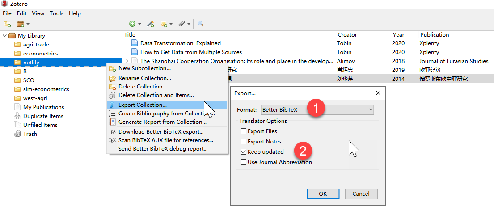

Rmarkdown写作环境下，Zotero + rbbt的方式，基本上实现了比较满意的文献管理和引用流程。Zotero具有免费和相对开放性。Zotero对bibTeX和中文情景比较友好。此外，R包rbbt函数实现了对Zotero的实时联系，引用流程更加自动化。使用者需要正确理解Rmd渲染输出、.bib文件状态和Zotero条目库的关系。
安装文献管理软件zotero和浏览器插件 。官网
软件本体Zotero 5.0 for Windows 下载。
浏览器插件Zotero Connector chrome 浏览器插件下载。
安装Zotero扩展插件zotero-better-bibtex 开发者网站。zotero-better-bibtex-5.2.78.xpi 下载安装。
具体修改方法：
设定citekey形式：打开Zotero\(\Rightarrow\) 编辑\(\Rightarrow\) 首选项\(\Rightarrow\) Better Bibtex（插件菜单\(\Rightarrow\) Citation keys。
更新citekey值：Zotero\(\Rightarrow\) 选中文献条目\(\Rightarrow\)鼠标右键 \(\Rightarrow\) Better Bibtex\(\Rightarrow\) refresh Bibtex key。
Better BibTeX格式（前提是要安装相应插件）导出到工作路径"netlify/content/bib/netlify.bib"，注意同时要勾选“keep updated”选项。这样的话就能实现Zotero文献的自动关联。
bibliography: "../../bib/netlify.bib"
csl: "../../bib/china-national-standard-gb-t-7714-2015-author-date.csl"
link-citations: yesrbbt在Rmarkdown写作下调用文献# remotes::install_github("paleolimbot/rbbt")
#require("rbbt")R包rbbt的主要作用见github：
与Zotero文献库直接关联，方便引用。
与.Rmd文件头yaml区域指定的.bib文件关联，实现“参考文献”列出。
主要过程：
rbbt包。# remotes::install_github("paleolimbot/rbbt")
require("rbbt")具体可以参看的Rmarkdown官方解释。
[@refkey1; @refkey2]一些国内学者[@liuhuaqin2014; @xiaohuizhong2019]一起发现...。[-@refkey]有学者[@alimov2018]...发现。他还发现[-@alimov2018]有学者(ALIMOV, 2018)…发现。他还发现(2018)
@refkey says that ...@tobin2020a 认为...。默认情况下，文献列表会出现在整个文档的最后。
如果要指定其出现位置，则需要插入一小段html代码<div id="refs"></div>，具体如下（可参看）。
# Introduction
# References {-}
<div id="refs"></div>
# Appendix
{-}是为了保持不自动给出“索引id”。待解决！
Rmarkdown写作环境下，Zotero + rbbt的方式，基本上实现了比较满意的文献管理和引用流程，优点如下：
Zotero的免费和相对开放性。免费+插件扩展。对很多网站的文章citation能够快速识别并导入到Zotero库里去，而且还能自动下载关联pdf！
Zotero对bibTeX的友好性。因为Rmarkdown对bibTeX的要求，而Zotero的相关操作极为便捷简单。此外，Zotero对中文文献情景也比较友好。
R包rbbt函数实现了对Zotero的实时联系，引用流程更加自动化。
重要提示：
正确理解Rmd渲染输出、.bib文件状态和Zotero条目库的关系。简单说：a) Rmd的输出最终只会引用.bib文件里的文献条目。b)R引用包（rbbt）与Zotero可以实时联系（通过zotero-better-bibtex扩展插件），但是这并不意味着Rmd渲染输出也是与Zotero实时联系的。c).因此，在写作草稿阶段，可以暂时不用关心.bib，只需要保持与Zotero实时联系即可（完成实时搜索和插入条目）。但是在最后完稿之前，务必需要及时更新调整.bib文件（从Zotero 中导出文献为.bib文件，替换更新原来的.bib旧文件即可）。
Zotero中Citekey的设置是一个关键步骤，我们需要做出合理的权衡。这是因为一方面@nameYear的引用便捷性，要求每条文献的citekey必须要简单易用；但是另一方面，Zotero往往会管理海量的文献条目，从而又要求文献的citekey不能重复——不然就没办法精确引用文献了。不过Zotero考虑并提供了选择，可以用动态key（dynamic key），也可以用锁定key（pined key）。
因为文献条目中可能包含了abstract等长文本域，为了避免Zotero导出.bib后，R包citr识别报错的问题。最好把Zotero 软件的Better Bibtex（插件菜单）做出如下导出设定。